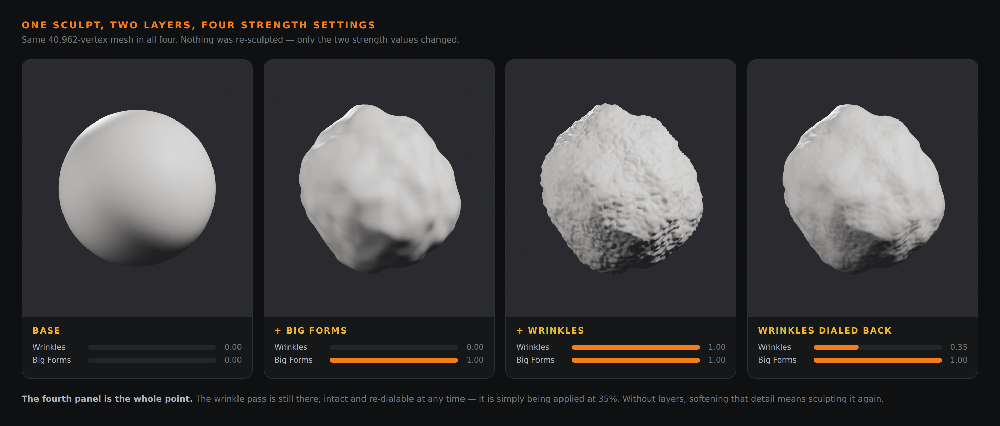
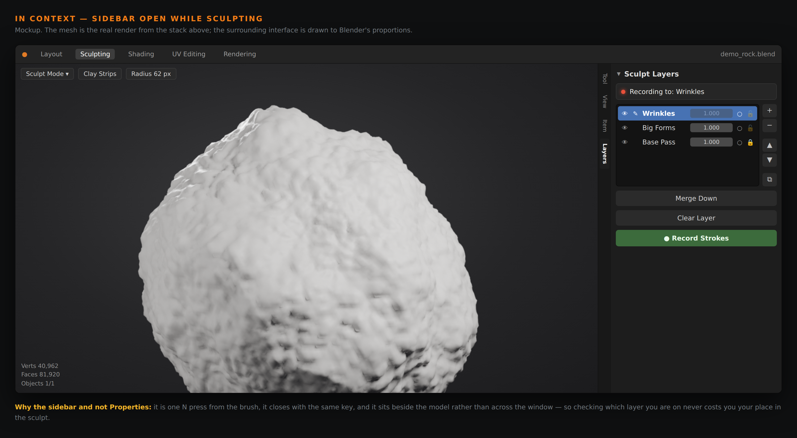

Put wrinkles on one layer, big forms on another, and dial either one back afterwards — without redoing the work. Lava brings non-destructive sculpt layers to Blender's sculpt mode.
A single .zip · installs straight into Blender · no account, no sign-up

Same 40,962-vertex mesh in all four. Nothing was re-sculpted — only the layer strength values changed.
The problem
In plain sculpt mode, every stroke is baked into one mesh. Change your mind about the wrinkles after you have added the pores and you are stuck — soften them and you lose the detail on top; keep them and you cannot touch them. ZBrush solved this twenty years ago with layers, and it is the feature artists miss most when they move to Blender. Lava is that system, built natively for Blender's sculpt mode.
What it does
Scrub a layer to 40% and the mesh updates as you drag. Push past 100% for more than you sculpted.
Automatically. No record button to arm, no mode to remember — just pick a layer and sculpt.
Hide a pass, isolate one to inspect it, or lock a layer so a stray stroke can't touch it.
Full layer management — collapse two passes together, branch a copy, or wipe one back to flat.
Bake the whole stack into the mesh when you're done, or drop everything back to the base shape.
Your layers are stored in the .blend. Close it, reopen it next week, every pass is still there.
In context
One N press from the brush, and it closes with the same key — so checking which layer you're on never costs you your place in the model.

The Layers panel in Blender's N-sidebar: each pass with its own strength, eye, and lock.
How it works
An object under Lava keeps a base — the vertices as they were when layers switched on. Each layer stores per-vertex offsets from that base, and the viewport shows:
coords = base + Σ ( offseti × strengthi ) for every visible layerYour brush moves vertices the way it always has. After each update, the active layer's offset is recomputed as whatever is left once every other layer is accounted for — that single subtraction is what makes strokes land on the active layer and nowhere else.
Install